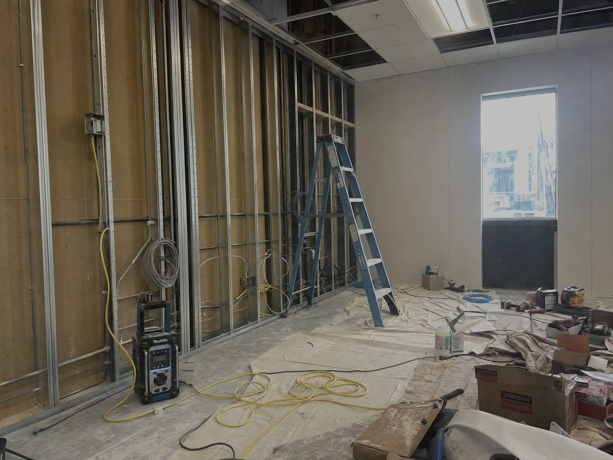
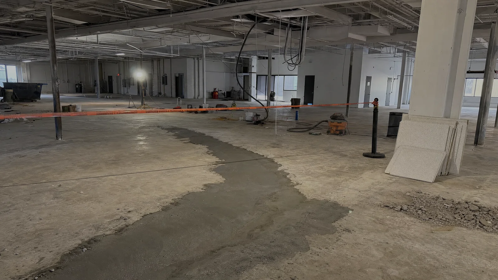
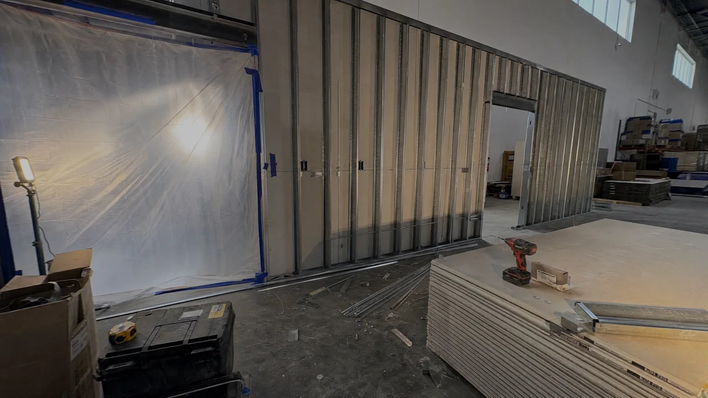
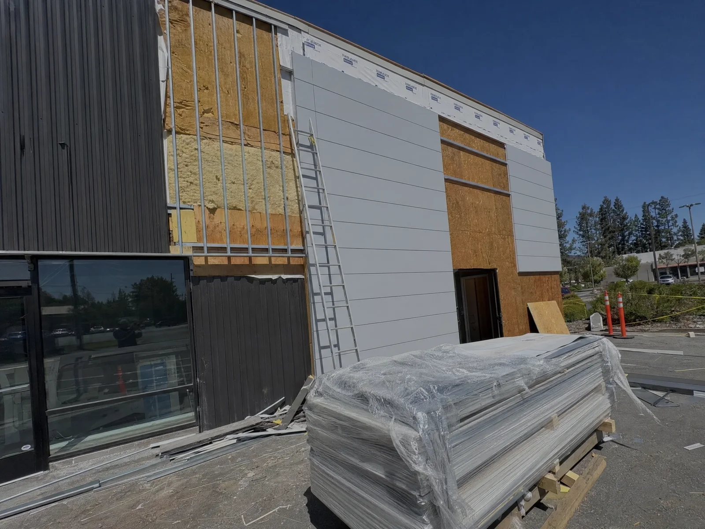
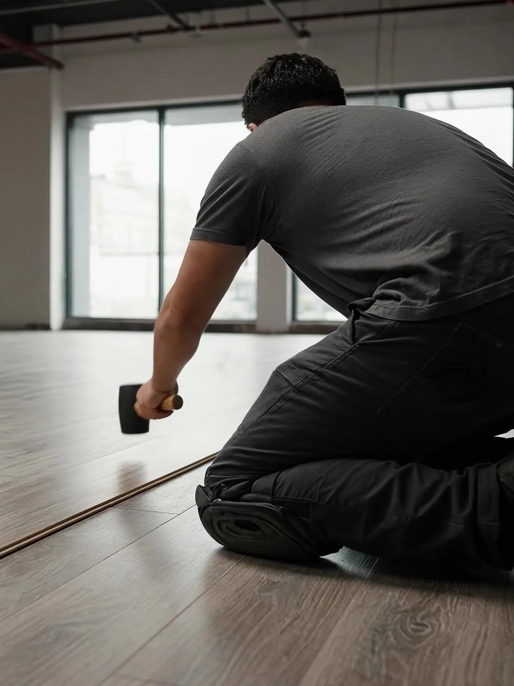
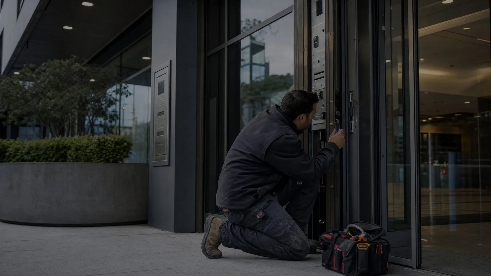
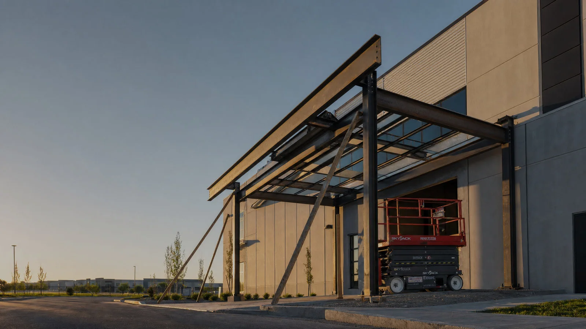

Built. Repaired.Improved.
Explore commercial environments and types of work that can help explain your requirement. These photographs are illustrative references; share your actual property information when discussing a comparable need.
Commercial focus.
Practical solutions.
Illustrative environments to help explain your property requirement. Share the actual location, scope and intended result when discussing a comparable need.





Photographs from the current IVO site, shown as illustrative references, not a verified project portfolio. Project case studies can be added here.
A commercial focus, across different kinds of work.
A useful project conversation begins with the property’s actual need. The environments shown here help illustrate the types of scope that may be brought to IVO, while the service pages explain the questions and decisions relevant to each path.
Improvements with a defined objective
Tenant changes, interior updates and specific trade packages start with a desired end condition. Issued plans, finish expectations and the limits of the work help separate a defined improvement from a broad discussion about what a space could become.
Property conditions that need attention
Repairs, turnovers and physical changes should be considered in relation to the affected area and its use. A request can begin with a photograph and a description of the problem, then develop into a more precise scope as the relevant information becomes available.
Records that explain the result
Questions, agreed revisions, relevant photographs and closeout items give context to a finished assignment. That context is more useful than a photograph alone when the customer needs to understand what was included and what still requires follow-up.
From a visual reference to a real project discussion.
If a pictured environment resembles your property, use it to explain the kind of result you have in mind. Then share the actual location, condition and constraints. The photographs and example scenarios on this site are illustrative, not a verified record of IVO-delivered projects or client endorsements.
- Choose the service path most closely related to your requirement.
- Share information about your actual property and intended result.
- Clarify the proposed scope before relying on a price or schedule.
Work we can
help you scope.
 01 / Capability
01 / CapabilityCommercial improvements
Review the service paths for tenant improvements, renovations, interior finishes and defined commercial construction requirements.
Commercial projects vary in size, but the useful starting point is the change the property needs. A tenant space may require a different layout, a refreshed interior or work within a limited portion of the building. The service pages explain how those requirements are organized for review.
The photographs on this page illustrate commercial environments and types of scope. They are not presented as verified IVO case studies, client endorsements or evidence that IVO completed a particular pictured project. Ask the team about information relevant to your own proposed scope rather than inferring a project history from an image.
Discuss this requirement → 02 / Capability
02 / CapabilityRepair, response & specialty scopes
Property repairs, turnovers, temporary protection and non-standard modifications address different stages of a commercial property’s use.
A property can move through several kinds of need over time. Routine wear may lead to a repair request, a tenant change to a turnover, and an unexpected incident to temporary protection followed by permanent corrective work. Each situation should have its own objective and authorization.
Keeping those needs organized helps avoid losing the history of a condition as the service path changes. The portal connects the request, relevant documents and later project records without treating a new requirement as automatically included in an earlier agreement.
Discuss this requirement →Find the details
you need.
Practical notes on what to send, how the work is organized and how decisions are recorded.
Match the property requirement
Identify the condition, affected area and result you need. Select Commercial Construction, Property Services, Emergency Property Response or Specialty Services as the starting point.
Begin with the affected component or space and explain what is preventing the property from operating as intended. If the requirement spans more than one service area, describe the complete objective. The team can discuss the appropriate starting path without requiring you to assign a trade category first.
Discuss a comparable scope
If an environment or service shown here resembles your requirement, share your location, photos, scope and timing. The team reviews the actual conditions before defining the next step.
Similar-looking spaces can have different materials, dimensions and access conditions. Include the relevant details of your property, along with the intended outcome, when asking about a comparable requirement. A visual reference is helpful, but it is not a substitute for reviewing the actual proposed work.
01Look beyond the finished photograph
The most useful project information explains the requirement, the decisions made and the boundary of the completed scope. A photograph can show an appearance, but it does not identify concealed conditions, material specifications, exclusions or the responsibilities of the participating parties.
For your own assignment, keep the relevant scope documents and agreed revisions with the completion record. Note which items were addressed and whether anything remains to be reviewed. Those details give a property team a more accurate basis for a later repair, inspection or improvement discussion.
02Turn an example into a clear brief
Use the service categories to organize the conversation with your own team. Identify the objective, the affected areas and the people who can provide the information needed for review. If a reference image suggests a particular finish or arrangement, explain which elements matter to the desired result.
Then separate confirmed requirements from preferences and open questions. That distinction helps a proposed scope develop without treating every visual detail as a specification. The actual property and the applicable written arrangement determine the work, not the appearance of a general example on this page.
Sending a photo of the finish we wanted, plus the real measurements of our space, gave us a starting point that actually led to a usable price.
Before the next step.
Still have a question? Call (206) 539-9549 or email office@ivoservgroup.com.
Are the images on this page a completed-project portfolio?
They illustrate commercial environments and service categories. They are not presented as verified IVO case studies. Ask the team directly about information relevant to the scope you are considering.
Can we send photographs of a similar result we want?
Yes, provided you have authority to share them. Explain which parts of the reference matter to your request, and include information about the actual property. A reference helps a discussion; it does not establish that identical materials or conditions apply.
Where should we send plans or formal bid information?
Use the bid-opportunity path for a defined package or contact bid@ivoservgroup.com. Identify the document revision, requested scope, location and response date so the material can be reviewed in the correct context.
See the service paths
behind the work.

Commercial Construction
Tenant improvements, renovations, build-outs and defined trade packages.

Property Services
Repairs, turnovers and ongoing support that keep properties leasable and running.

Specialty Services
Property modifications, multi-trade work and scopes that don’t fit a standard label.
Start with one project.
Let us earn the next one.
Tell us what the property needs. We’ll help identify the appropriate next step.